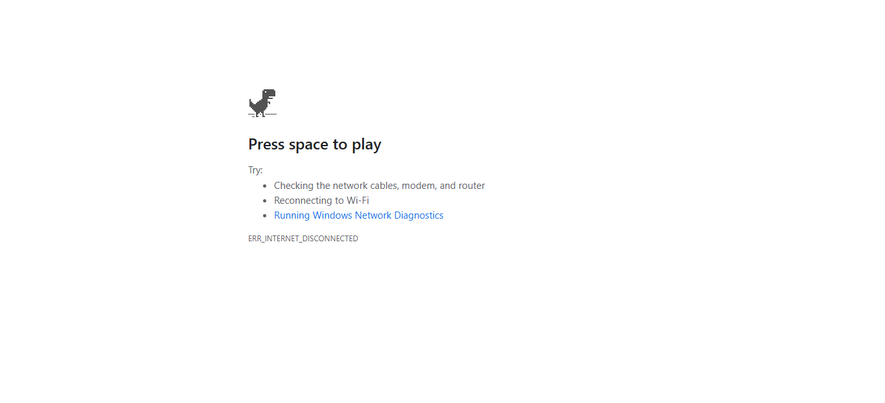

-
Test SauseDemo Applcation
7:19:45 pm / 00:00:29:121 Fail
Test SauseDemo Applcation
07.08.2026 7:19:45 pm 07.08.2026 7:20:14 pm 00:00:29:121 · #test-id=1FailValidate Login functionalityGiven user is on login pagestepDefination.CheckoutCmpltPageSteps.takeScreenshot(io.cucumber.java.Scenario)Validate Login functionality
When user enter "standard_user" as userName and "secret_sauce" as passwordStep skippedThen user click on login pageStep skippedFailvalidate product add to cart functionalityGiven user click on filter iconstepDefination.CheckoutCmpltPageSteps.takeScreenshot(io.cucumber.java.Scenario)Then user click on price range optionsStep skippedAnd user click on first add to cart optionStep skippedThen user click on go to cart iconStep skippedAnd user click on checkOut buttonStep skippedFailValidate checkout informationGiven user enter "Santosh" as firstName and "Doiphode" as lastName and "4512" as pincodestepDefination.CheckoutCmpltPageSteps.takeScreenshot(io.cucumber.java.Scenario)Then user click on continue buttonStep skippedFailValidate ChecOutOverviewGiven user click on finish buttonstepDefination.CheckoutCmpltPageSteps.takeScreenshot(io.cucumber.java.Scenario)Then user click on back to home buttonStep skipped
-
org.openqa.selenium.WebDriverException
1 tests
org.openqa.selenium.WebDriverException
1 failedStatus Timestamp TestName Fail 19:19:45 pm Given user is on login page Test SauseDemo Applcation.Validate Login functionality.Given user is on login page -
org.openqa.selenium.NoSuchSessionException
6 tests
org.openqa.selenium.NoSuchSessionException
6 failedStatus Timestamp TestName Fail 19:20:10 pm Given user click on filter icon Test SauseDemo Applcation.validate product add to cart functionality.Given user click on filter iconFail 19:20:14 pm stepDefination.CheckoutCmpltPageSteps.takeScreenshot(io.cucumber.java.Scenario) Test SauseDemo Applcation.validate product add to cart functionality.stepDefination.CheckoutCmpltPageSteps.takeScreenshot(io.cucumber.java.Scenario)Fail 19:20:14 pm Given user enter "Santosh" as firstName and "Doiphode" as lastName and "4512" as pincode Test SauseDemo Applcation.Validate checkout information.Given user enter "Santosh" as firstName and "Doiphode" as lastName and "4512" as pincodeFail 19:20:14 pm stepDefination.CheckoutCmpltPageSteps.takeScreenshot(io.cucumber.java.Scenario) Test SauseDemo Applcation.Validate checkout information.stepDefination.CheckoutCmpltPageSteps.takeScreenshot(io.cucumber.java.Scenario)Fail 19:20:14 pm Given user click on finish button Test SauseDemo Applcation.Validate ChecOutOverview.Given user click on finish buttonFail 19:20:14 pm stepDefination.CheckoutCmpltPageSteps.takeScreenshot(io.cucumber.java.Scenario) Test SauseDemo Applcation.Validate ChecOutOverview.stepDefination.CheckoutCmpltPageSteps.takeScreenshot(io.cucumber.java.Scenario)
Started
Jul 8, 2026 07:19:44 pm
Ended
Jul 8, 2026 07:20:14 pm
Features Passed
0
Features Failed
1
Features
Scenarios
Steps
Timeline